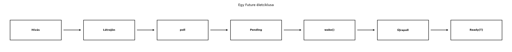

Ha C++-ban tíz TCP-kapcsolatot akarunk egyszerre kiszolgálni, a
hagyományos megoldás gyakran tíz szál. Minden szál saját veremmel, saját
ütemezési állapottal rendelkezik, és a kernel egy-egy blokkoló
read hívás közben felfüggeszti. Ez tíz szál esetén még
elfogadható; százezer kapcsolatnál már memória- és ütemezési
katasztrófa. A C++20 bevezette a korutinokat, a Rust pedig a
Future-alapú async/await modellt: a cél mindkét nyelvben
az, hogy egy feladat felfüggesztéséhez ne kelljen külön szál, hanem egy
kisméretű állapotgép tárolja, hol tart a művelet.
A Rust megközelítés lényege: az async fn hívása
nem hajtja végre a függvény törzsét. Ehelyett egy olyan
értéket ad vissza, amelyet egy úgynevezett executor
polloz. Ez a fejezet azt mutatja meg, mi történik a motorháztető alatt:
mit tartalmaz a Future, mi a poll, mi a
Waker, és miért van szükség Pin-re.
Definíció. A Future trait egy olyan
értéket ír le, amely egy később rendelkezésre álló eredményt képvisel. A
szabványos definíció leegyszerűsítve:
pub trait Future {
type Output;
fn poll(self: Pin<&mut Self>, cx: &mut Context<'_>) -> Poll<Self::Output>;
}
pub enum Poll<T> {
Ready(T),
Pending,
}A poll hívás az egyetlen mód, ahogy a future haladást
érhet el. A Ready(value) azt jelenti, hogy az eredmény
elkészült, a Pending pedig azt, hogy a future még nem tud
befejeződni; az executor később újra fogja hívni a
poll-t.
Szabály. Az async fn hívása nem fut le
azonnal: a hívás egy impl Future<Output = T> értéket
hoz létre, amely a függvény állapotgépét tartalmazza. A függvény törzse
csak akkor kezd el futni, amikor valaki meghívja a poll
metódust.
A Waker szerepe: amikor egy future Pending
értéket ad vissza, gondoskodnia kell arról, hogy valaki később értesítse
az executort. Három modellt kell megkülönböztetni:
poll a Context-ből kapott Waker-t
eltárolja az eseményforrásnál; amikor az esemény bekövetkezik (a socket
olvashatóvá válik), a forrás meghívja a Waker::wake()-et,
és az executor újra ütemezi a taskot. Minden poll-nál a
legutóbbi wakert kell tárolni (a régit lecserélve, szükség
esetén a will_wake összehasonlítással), mert az executor a
taskot közben másik wakerrel is pollozhatja.async fn
állapotgépe): nem tárol saját wakert. A .await pontokon a
generált poll ugyanazt a cx-et adja tovább a
belső (child) future-nek, így a wakerfelelősség a levélig
delegálódik; az executor ezért az összetett future mellé sem
tárol külön wakert, csak a task Waker-ét adja át a
poll-nak.tokio::spawn): a
runtime a taskot magától futtatja, az await-elt
JoinHandle pedig egy külön future, amely akkor lesz kész,
amikor a task befejeződik; a JoinHandle eldobása a taskot
nem szakítja meg (leválasztja róla).A poll szerződése: egy Ready(v) után a
future-t többé nem szabad pollozni (az async fn állapotgépe
ekkor pánikol: async fn resumed after completion), egy
Pending után pedig csak akkor érdemes újrapollozni, ha a
waker jelzett. A Waker tehát az a csatorna, amely lehetővé
teszi, hogy a future ne pörögjön folyamatosan, hanem várjon.
Szabály. A Rust standard könyvtár
nem tartalmaz beépített async runtime-et. Az
async fn és a Future csak a nyelvi és
könyvtári alapszint; az executor és a reaktor — az I/O eseményeket
figyelő komponens — külső crate-ekből, jellemzően a Tokio-ról
származik.
C++20-ban egy korutin vázlata:
#include <coroutine>
#include <iostream>
struct Task {
struct promise_type {
Task get_return_object() { return {}; }
std::suspend_never initial_suspend() { return {}; }
std::suspend_never final_suspend() noexcept { return {}; }
void return_void() {}
void unhandled_exception() {}
};
};
Task compute() {
co_await std::suspend_never{};
std::cout << "hello from coroutine\n";
}A Rust megfelelő gondolati párja:
async fn compute() {
println!("hello from async fn");
}A látszólagos hasonlóság mögött fontos különbségek vannak. A C++
korutinoknál a visszatérési típus promise_type-ja határozza
meg a korutin viselkedését, és a felfüggesztés a co_await
kifejezéssel történik. A Rust-ban az async fn egy
Future értéket ad, és a felfüggesztési pont a
.await posztfix művelet. A C++ korutin frame-je gyakran
dinamikusan allokálódik, bár a fordító elideálhatja; a Rust async fn
állapotgépe általában inline tárolódik a future értékben, és akár nulla
allokációval is használható. A legfontosabb különbség a végrehajtási
modell: a Rust future passzív, az executor húzza a poll-on
keresztül; a C++ korutinok is külső resumálásra várnak, de a nyelv
szabadabban engedi a coroutine_handle közvetlen
folytatását, és a co_await általánosabb felfüggesztési
mechanizmust takar.
Először nézzük a leggyakoribb kezdő hibát:
async fn greet() -> String {
"hello".into()
}
fn main() {
let s = greet();
println!("{s}");
}Ez a változat szándékosan nem fordul le: a greet() hívás
eredménye impl Future<Output = String>, nem
String, ezért a println! nem tudja formázni. A
hibaüzenet lényege: „greet() returns
impl Future<Output = String>, which does not
implement Display”. A javítás egy executor és egy
.await hozzáadása:
#[tokio::main]
async fn main() {
let s = greet().await;
println!("{s}");
}Ahhoz, hogy lássuk, mit csinál az executor, implementáljunk egy
nagyon egyszerű future-t. A következő Remind az első
pollozásnál még Pending, a másodiknál Ready
lesz, és közben értesíti a wakert:
use std::future::Future;
use std::pin::Pin;
use std::task::{Context, Poll, Waker};
struct Remind {
ready: bool,
}
impl Future for Remind {
type Output = &'static str;
fn poll(mut self: Pin<&mut Self>, cx: &mut Context<'_>) -> Poll<&'static str> {
if self.ready {
Poll::Ready("megvan!")
} else {
self.ready = true;
// Értesítsük az executort, hogy érdemes újra pollozni.
cx.waker().wake_by_ref();
Poll::Pending
}
}
}
fn main() {
let future = Remind { ready: false };
let waker = Waker::noop();
let mut cx = Context::from_waker(&waker);
let mut pinned = Box::pin(future);
match pinned.as_mut().poll(&mut cx) {
Poll::Pending => println!("első poll: Pending"),
Poll::Ready(s) => println!("első poll: Ready({s})"),
}
match pinned.as_mut().poll(&mut cx) {
Poll::Pending => println!("második poll: Pending"),
Poll::Ready(s) => println!("második poll: Ready({s})"),
}
}A Waker::noop() a standard könyvtárban stabil (a
rögzített Rust 1.99.1-ben elérhető). A poll
Pin<&mut Self> paramétert vár, de ehhez a
Box::pin nem szükséges: a
Remind csak egy bool-t tartalmaz, tehát
Unpin, ezért a Pin::new(&mut future) is
megfelel (lásd a következő szakaszt). A példa a Box::pin-t
a kupacon tartott, könnyen továbbadható
Pin<Box<F>> miatt használja. Várt kimenet:
első poll: Pending
második poll: Ready(megvan!)A Remind példa megmutatja a modell lényegét: a future
nem fut, amíg pollozva nincs; Pending esetén a wakerrel
jelzi az újrapollozási igényét; a Ready pedig a
végeredményt tartalmazza.
Egy async fn lefordításakor a Rust fordító egy olyan
struktúrát generál, amely a függvény lokális változóit tárolja, és egy
Future implementációt ad hozzá. A .await
pontoknál a generált poll meghívja a belső future
poll metódusát; ha az Pending, akkor a külső
future is Pending-et ad vissza. Ha a belső
Ready, akkor a külső folytatja a következő utasítással.
Tekintsük ezt a vázlatot:
async fn example(a: u32) -> u32 {
let x = a + 1;
let y = read_value().await;
x + y
}A generált állapotgép nagyjából így gondolkodik:
x = a + 1, hívja
read_value().poll(...).read_value Ready(y), állapot
1: visszaadja Ready(x + y).read_value Pending, a külső future is
Pending-et ad vissza; a wakert nem ő tárolja: ugyanazt a
cx-et adta tovább, így a belső (levél) future
regisztrálta.Az állapotgép tehát a .await pontokon felfüggeszti
magát, és a poll legközelebbi hívásakor ott folytatja, ahol
abbahagyta.
Miért nincs beépített runtime? A Rust standard
könyvtár csak a Future, a poll és a
Waker alapfogalmát definiálja. A valódi ütemezés — mikor,
melyik szálon, hány future-t pollozzon az executor — tudatosan a
felhasználóra van bízva. Ez lehetővé teszi, hogy különböző környezetben
különböző executor fusson: operációs rendszeren (szerveren, asztali
gépen) a Tokio, mikrovezérlőn pedig no_std executor,
például az Embassy (lásd no_std, embedded-hal és
Embassy). A Tokio operációs rendszert (szálakat, I/O-eseménykezelőt)
feltételez, ezért nem mikrovezérlő-runtime. A C++-hoz hasonlóan a
Rustban sincs „egyetlen igaz” async futtató, de a Tokio a de facto
standard.
Az async fn-ek egyik elsőre meglepő tulajdonsága, hogy
miért kell Pin-t használni. A C++-ban megszokott mozgatási
szemantikából tudjuk: egy objektum memóriabeli mozgatása után a rá
mutató nyers címek érvénytelenné válnak. Ha egy async fn
törzse egy .await pont felett tart életben egy referenciát,
például:
async fn read_to_end(&mut self) -> std::io::Result<()> { // töredék: a `self` környezete nincs megadva
while !self.buf_full() {
let n = self.reader.read(&mut self.buf).await?;
// ...
}
Ok(())
}akkor a generált állapotgép önhivatkozóvá válhat: az egyik mezője
referencia egy másik mezőjére mutat. Ha a future-t ezután megmozgatjuk,
a referencia érvénytelen lesz. A Pin<&mut Self>
azt garantálja, hogy a future nem mozdul el a pollozás során. A
Future::poll ezért vesz
Pin<&mut Self>-et, és a tipikus használat
Box::pin vagy a tokio::pin! makró.
A Pin tehát nem misztikum: típusrendszerbeli garancia
arra, hogy egy önhivatkozó értéket ne lehessen biztonságos kódból
elmozdítani, miután pinelték. A pontos szerződés négy részből áll:
Vec-be tehető). A
Pin<P> létrehozása után az, amire a pointer mutat (a
pointee), a drop-ig nem mozdulhat el, és a memóriája nem
szabadítható fel, nem használható fel újra.Pin a
pointee címét rögzíti, nem a pointerét. Egy
Pin<Box<F>> ezért szabadon mozgatható (csak a
Box pointer költözik), miközben a benne lévő F
címe állandó. Egy Pin<&mut F> esetén az
F-nek kell helyben maradnia.Drop::drop lefutásáig érvényes marad, ezért az önhivatkozó
mutatók a drop-ban is használhatók.Unpin
típusoknál (a legtöbb szokásos típus) a pinelés semmit nem korlátoz: a
Pin::new biztonságosan hívható, és a
Pin<&mut T>-ből &mut T nyerhető.
!Unpin típust (például az async fn
állapotgépét, vagy egy PhantomPinned mezőt tartalmazó
structot) csak Box::pin-nel vagy a pin!
makróval lehet pinelni; a mezőkhöz való hozzáférés (projekció)
biztonságosan csak szerkezetileg nem pinelt mezőre lehetséges, a pinelt
mezőre unsafe kell (Pin::get_unchecked_mut),
amit a pin-project crate fed el biztonságos
felülettel.Az alábbi program a három tipikus esetet mutatja egymás mellett
(kimenete: ok):
use std::future::Future;
use std::marker::PhantomPinned;
use std::pin::{pin, Pin};
use std::task::{Context, Poll, Waker};
/// Unpin: egyetlen bool mező, a Pin::new elég.
struct Remind {
ready: bool,
}
impl Future for Remind {
type Output = &'static str;
fn poll(mut self: Pin<&mut Self>, cx: &mut Context<'_>) -> Poll<&'static str> {
if self.ready {
Poll::Ready("megvan!")
} else {
self.ready = true;
cx.waker().wake_by_ref();
Poll::Pending
}
}
}
/// !Unpin: a PhantomPinned jelzi, hogy a pinelt érték címe nem változhat.
struct Fixed(PhantomPinned);
fn main() {
let mut cx = Context::from_waker(Waker::noop());
// 1. Unpin future: a Pin::new elég, nincs szükség kupacra.
let mut remind = Remind { ready: false };
let mut pinned = Pin::new(&mut remind);
assert!(pinned.as_mut().poll(&mut cx).is_pending());
assert!(pinned.as_mut().poll(&mut cx).is_ready());
// 2. A pinelés *előtt* a future szabadon mozgatható.
let fut = Remind { ready: false };
let moved = fut;
// 3. Pin<Box<F>>: a Box mozgatható, a benne lévő F címe állandó.
let boxed: Pin<Box<Remind>> = Box::pin(moved);
let address_before = &*boxed as *const Remind;
let moved_box = boxed; // csak a pointer költözik
assert_eq!(address_before, &*moved_box as *const Remind);
// 4. pin!: a verem-lokális érték helyben pinelődik (Pin<&mut F>). A `Remind` `Unpin`
// (csak egy bool), ezért ebből a `Pin`-ből `&mut`-ot ki lehet nyerni; a mozgathatatlanság
// kikényszerítése a `!Unpin` típusnál (lásd 5.) számít.
let local = pin!(Remind { ready: false });
let _ = local;
// 5. !Unpin típusra a Pin::new nem hívható; csak Box::pin vagy pin!.
let _fixed = pin!(Fixed(PhantomPinned));
println!("ok");
}Ha az utolsó pontban Pin::new(&mut fixed)-et írnánk,
a fordító E0277 hibát ad (PhantomPinned cannot
be unpinned). A Box::pin tehát nem „a Pin
kötelező kelléke”, hanem egyike a pinelés módjainak: Unpin
típusnál a Pin::new, verem-lokális !Unpin
értéknél a pin!, kupacon élő és továbbadandó futurenél a
Box::pin a megfelelő. A következő, Pin,
Unpin, async trait-ek és a Send-határok alfejezet ezt mélyebben ki
fogja fejteni.

Az ábra lépései szövegesen:
async fn meghívása.Future<Output = T>
létrejön, de még nem fut.Az ábra azt hangsúlyozza, hogy a future életét az executor pollozása
vezérli. A Pending nem hiba: a future ilyenkor adja át
magát az ütemezőnek, és csak akkor jelentkezik újra, ha a waker jelzi,
hogy a várt erőforrás elérhető.
| Szempont | Async/Future | Szál |
|---|---|---|
| Sok rövid, I/O-igényes feladat | Kiváló: kis memórianyom, gyors váltás | Sok szál nagy veremköltséget jelent |
| CPU-igényes, hosszú számítás | Rossz, ha egy executor szálat blokkolja | Jó, ha a feladat tényleg párhuzamos |
| Egyszerű szinkron kód | .await fertőzés, executor kell |
Egyszerű thread::spawn |
| Hibaelkülönítés | Egy pánik a taskot veszi le, de a runtime marad | A szál pánikja a szálat öli meg |
| Memória | Kis állapotgépek | 2–8 MiB verem szálanként |
| Megfelelő Rust-megoldás | Tokio spawn |
std::thread vagy rayon |
A döntési szabály: ha a feladat döntően várakozás — hálózat, fájlművelet, időzítő —, az async jobb. Ha a feladat ténylegesen számol, használjunk szálat vagy a rayon crate-et, és ne blokkoljunk async taskot hosszú CPU-munkával.
Az async fn hívása .await
nélkül. A visszatérési érték impl Future, nem a
várt String vagy u32. A fordító ilyenkor
Future típusú értéket mutat, és a hibaüzenetben a
Display hiánya vagy a típuseltérés jelenik meg.
.await szinkron kódban. A
.await csak async fn-ben vagy
async blokkban használható. A következő nem fordul le, a
hiba lényege E0728:
fn main() {
async { 1 + 1 }.await;
}Blokkoló hívás async taskban. A
std::thread::sleep vagy egy nagy
read_to_string egy async fn-ben blokkolja az
executor egy szálát, tönkretéve a többi task ütemezését. Helyette
tokio::time::sleep-et és async I/O-t kell
használni.
A Waker elfelejtése. Ha egy
Future Pending-et ad, de nem regisztrálja a
wakert, az executor nem fogja tudni, mikor érdemes újrapollozni; a
future örökre felfüggesztve marad. Saját Future
implementációban erre különösen figyelni kell.
Mit jelent a Future::poll Pending
visszatérési értéke? Mi a különbség aközött, hogy egy
async fn hívása Ready-vel tér vissza, és
aközött, hogy a hívás maga Ready értéket ad?
Írd át a következő C++20 std::async alapú kódot
idiomatikus Rust async kódra Tokio spawn használatával:
#include <future>
#include <iostream>
int compute() { return 40 + 2; }
int main() {
auto fut = std::async(std::launch::async, compute);
std::cout << fut.get() << "\n";
}DelayedReady futureKészíts egy önálló crate-et a ~/rust-labor/r037/
munkakönyvtárban (cargo new r037). Implementálj egy
DelayedReady struktúrát, amely az első
poll-nál Pending-et ad, eltárolja a wakert, és
egy külső wake() hívás után a második poll-nál
Ready(42)-t ad vissza. A main-ben kézzel
pollozd.
Adott a következő async függvény:
async fn wait_a_second() {
std::thread::sleep(std::time::Duration::from_secs(1));
}Miért problémás ez a Tokio executor szempontjából? Javítsd
tokio::time::sleep használatára, és magyarázd el a
különbséget.
A Pending nem azt jelenti, hogy a future fut, hanem azt,
hogy jelenleg nem tud befejeződni; a future-nek ilyenkor regisztrálnia
kell a wakert, hogy az executor később újra pollozza. Amikor egy
async fn hívása egy future-t ad vissza, az
egy érték, amelynek a típusa impl Future<Output = T>;
a függvény törzse még nem futott. A Ready a
poll visszatérési értéke, és azt jelzi, hogy a future
kész.
#[tokio::main]
async fn main() {
let fut = tokio::spawn(compute());
let result = fut.await.unwrap();
println!("{result}");
}
async fn compute() -> i32 {
40 + 2
}A tokio::spawn egy JoinHandle-t ad vissza,
amely maga is Future. A compute() azonnal
visszaad egy future-t, amelyet a Tokio runtime egy külön taskként
ütemez. A .await a JoinHandle-on várja meg a
task eredményét.
DelayedReadyuse std::future::Future;
use std::pin::Pin;
use std::task::{Context, Poll, Waker};
struct DelayedReady {
waker: Option<Waker>,
woke: bool,
}
impl DelayedReady {
fn wake(&mut self) {
self.woke = true;
if let Some(waker) = self.waker.take() {
waker.wake();
}
}
}
impl Future for DelayedReady {
type Output = i32;
fn poll(mut self: Pin<&mut Self>, cx: &mut Context<'_>) -> Poll<i32> {
if self.woke {
Poll::Ready(42)
} else {
self.waker = Some(cx.waker().clone());
Poll::Pending
}
}
}
fn main() {
let future = DelayedReady { waker: None, woke: false };
let waker = Waker::noop();
let mut cx = Context::from_waker(&waker);
let mut pinned = Box::pin(future);
assert!(pinned.as_mut().poll(&mut cx).is_pending());
// Kívülről jelezzük a készenlétet.
pinned.as_mut().get_mut().wake();
// A Pin::get_mut kifejezetten `T: Unpin` feltételt kér: a DelayedReady (Option<Waker> + bool)
// Unpin, ezért a safe get_mut hívható. Egy !Unpin (például önhivatkozó async) future-re
// ez E0277 fordítási hiba lenne, így nem lehet véletlenül kimozgatni.
match pinned.as_mut().poll(&mut cx) {
Poll::Ready(v) => println!("ready: {v}"),
Poll::Pending => println!("még mindig pending"),
}
}Ez a példa előkészíti a tokio taskok és a
JoinHandle alfejezetet, ahol a valódi executor végzi el
ugyanezt a pollozási és waker-kezelési feladatot.
A std::thread::sleep blokkolja az aktuális szálat. A
Tokio executor egy szálon több száz vagy több ezer async taskot futtat;
ha egy task blokkolja a szálat, az összes többi task is megáll. Ráadásul
a blokkolás alatt a timer vagy I/O események sem tudnak lefutni. A
javítás:
async fn wait_a_second() {
tokio::time::sleep(std::time::Duration::from_secs(1)).await;
}A tokio::time::sleep egy olyan future-t ad, amely a
Tokio timer-reaktorjában regisztrálja a wakert, és azonnal
Pending-et ad; a szál így szabadon pollozhat más taskokat.
Ez az alapja a Tokio: taskok, I/O, csatornák, select
és megszakítás alfejezetnek.
A Future trait a Rust aszinkron modelljének alapja: a
poll metódus Ready-t vagy
Pending-et ad, a Waker pedig lehetővé teszi az
executor értesítését. Az async fn hívása egy
impl Future állapotgépet hoz létre, de nem futtatja a
függvényt; a futás csak a pollozással kezdődik. A standard könyvtár nem
tartalmaz runtime-et, ezért a Tokio biztosítja az executort és a
reaktort. A Pin az önhivatkozó async állapotgép mozgatását
akadályozza meg. A C++20 korutinokkal szemben a Rust Future
poll-alapú, passzív, és a .await a felfüggesztési pont. A
döntési szabály: sok várakozó I/O-ra async, hosszú CPU-munkára szál vagy
rayon. Ez a modell készíti elő a Pin, Unpin, async
trait-ek és Send-határok, a Tokio taskok és
csatornák, valamint az rkv hálózati szerver
alfejezeteket.
A Future, Poll, Waker és
Pin fogalmai a Rust Reference és a standard könyvtár
std::future/std::task/std::pin
dokumentációján alapulnak (https://doc.rust-lang.org/std/). A
Waker::noop() a rögzített Rust 1.99.1-ben stabil. A
hibaüzenetek pontos szövege verziófüggő. A C++20 korutinok
viselkedésének részletei, például az initial_suspend
futtatási sorrendje, a C++ szabvány és a használt fordító
dokumentációjában ellenőrizhetők.